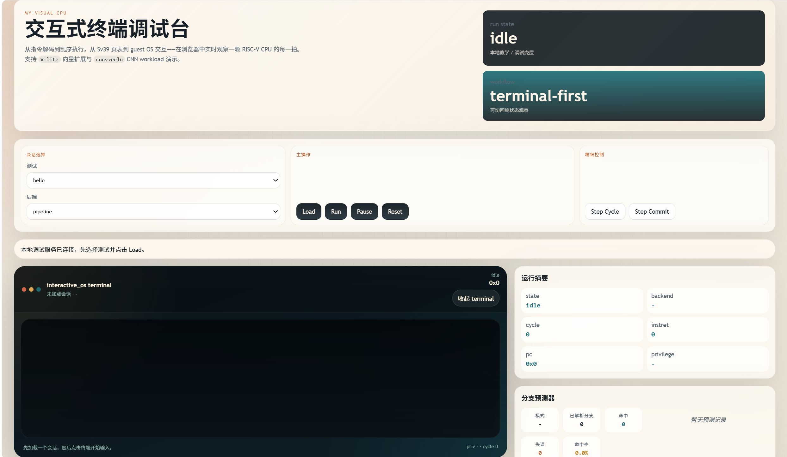
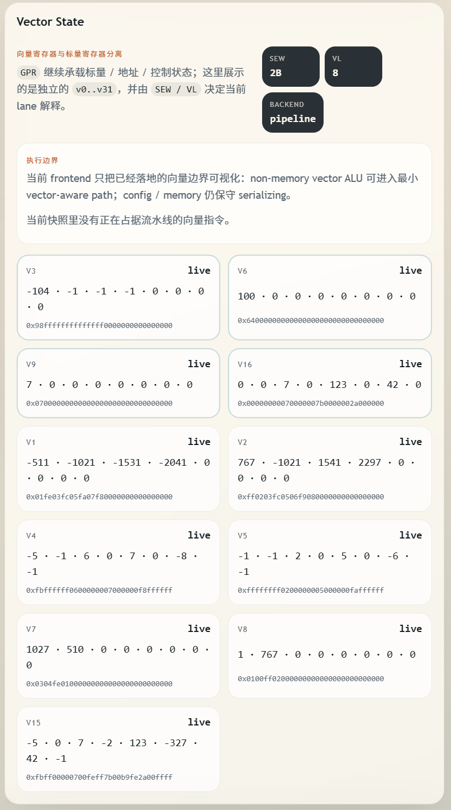
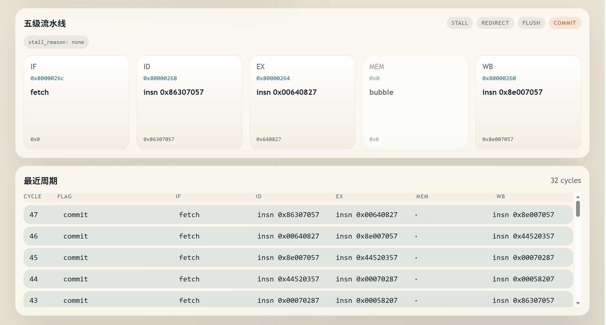

CPU 核心执行流
以 functional 作为 ISA 级 reference path，同时保留 pipeline 后端观察 rename、ROB、LSQ 和最小真实 OoO execute 边界。
decode
rename / issue
execute / commit
10 minute defense narrative
myCPU 从 C 原型演进为模块化 C++ 架构，目标不是停留在指令解释器，而是把 CPU、MMU、trap、外设和 guest runtime 接成可运行的系统闭环。


$ kernel_alpha_demo KMVPETDS $ guest_vector_cnn_demo V3OK $ xv6-riscv init: starting sh
architecture spine
这段用于替代 PPT 中最容易散的功能罗列：先讲执行流，再讲内存与特权，最后落到 guest kernel bring-up。
以 functional 作为 ISA 级 reference path，同时保留 pipeline 后端观察 rename、ROB、LSQ 和最小真实 OoO execute 边界。
用 Sv39、TLB、sfence.vma、M/S/U privilege 和 trap delegation 把“指令能跑”推进到“系统能隔离运行”。
guest 侧从 boot、PMM、页表、trap runtime 到用户态任务，支撑 kernel_alpha 和更真实的 xv6 workload。
evidence stage
最终视频里，这一段可以切局部特写：左侧放真实截图，右侧替换成你录好的 xv6 shell 或 kernel_alpha 操作片段。

closing frame
答辩视频结尾不要说“所有方向都完成了”，而是明确当前成果、稳定化重点和后续阶段。
完成最小 OS / kernel bring-up，稳定 trap、MMU、外设和 guest runtime 主路径。
在统一 ISA 语义来源上维护 functional 与 pipeline 两种执行模型。
继续观察 rename、ROB、LSQ 和 OoO execute 的最小结构收益。
后续再评估 cache、DMA、multicore 等系统级扩展，不抢跑大范围功能面。